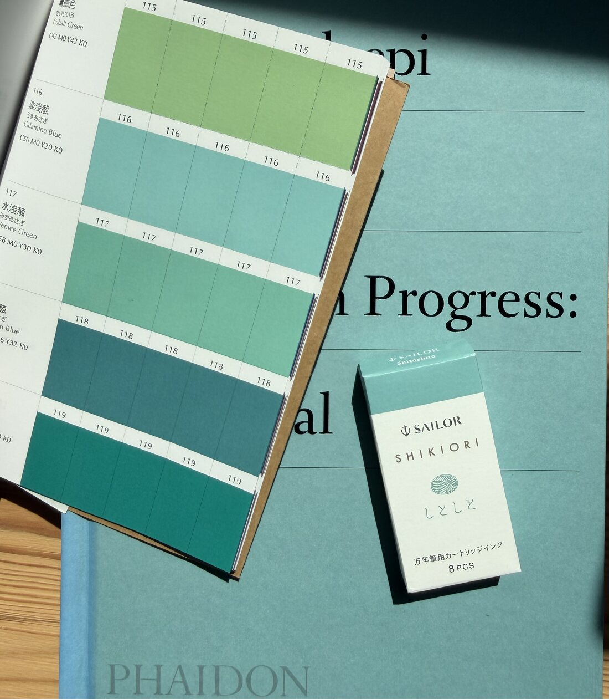

My website (mcavus.com) needed a renovation. Even though it looks simple, it took a while to get the design just right.
I took inspiration from the following objects that were sitting on my desk and bookshelf: a Sailor ink cartridge box in Shito-shito, A Work in Progress, and the Dictionary of Color Combinations, specifically #116, Calamine Blue.

This blue/sage color was exactly the accent I wanted to have throughout the site.
I also wanted to make sure the dark mode felt right, and didn’t want to just invert the color scheme to get it. In fact, most of the design and development effort went into the 404 page, which 99.9% of visitors will never see. If you are curious, you can try mcavus.com/notfound (or anything else after the slash) and switch between light and dark mode. It’s of no use, but I like having a dark mode that is as well thought out as the light mode.
Another personal touch I wanted was my monogram. I put it in the footer and styled it to mimic a blind emboss. In light mode, it gives the feeling of an emboss on thick paper, and in dark mode, on leather.
Even though I put a lot of thought into the design of the site, the build is relatively simple and lightweight. The whole website folder is not even 1 MB, and that’s including images and favicons. No libraries, just plain HTML, CSS, and a bit of JS; for a site like this, it’s pretty much all you need, really. And yes, it is responsive. You can find more details about the build.
Hosting is free thanks to GitHub Pages, and deployment is automatic. The whole site costs me nothing other than the domain name. To avoid putting up cookie banners, to comply with cookie laws, and to respect visitors’ privacy, I opted for the free Cloudflare Web Analytics, as it doesn’t set any cookies.
For the blog, I built a brand-new Mac app called Overprint. More on that in the next blog post.
I’m quite happy with it. It’s like an architect building their own home. I’m not an architect and I cannot build a home, but luckily I can build my personal website. Perhaps I should have studied architecture.